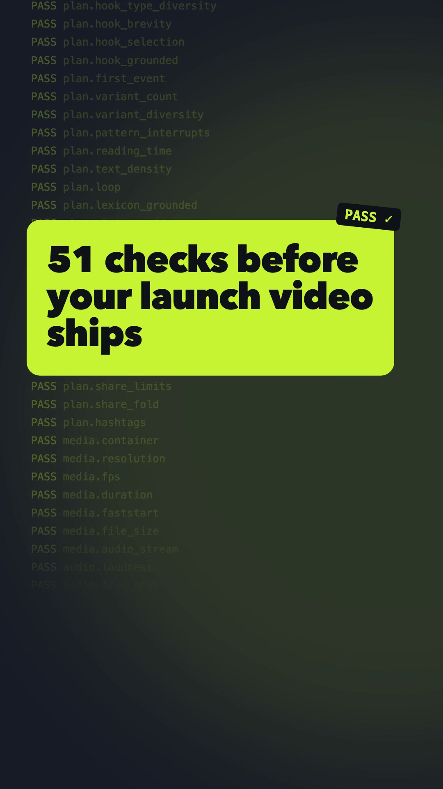
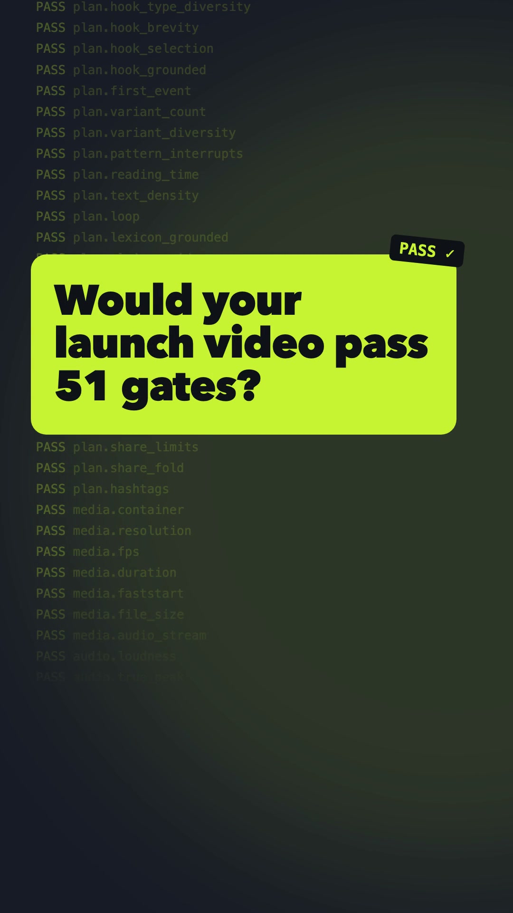
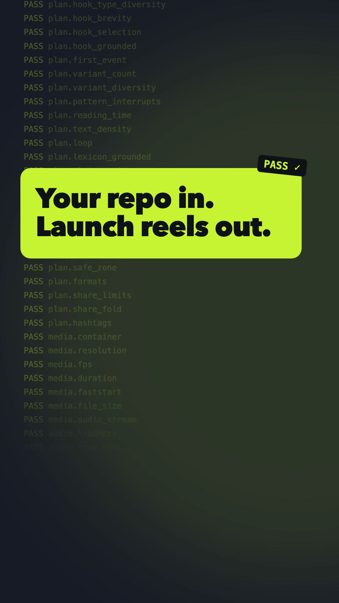
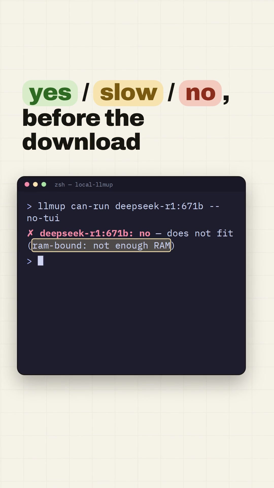
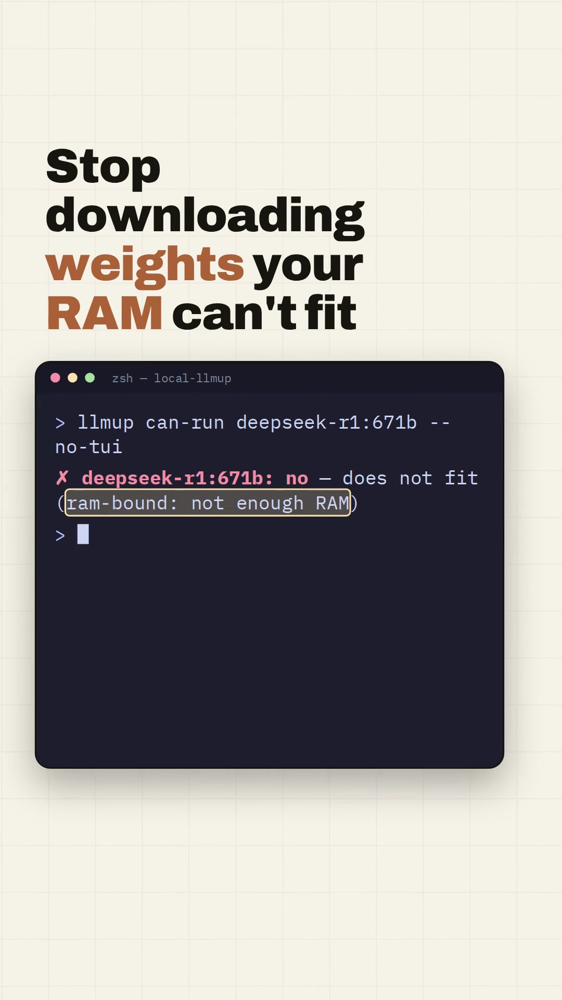
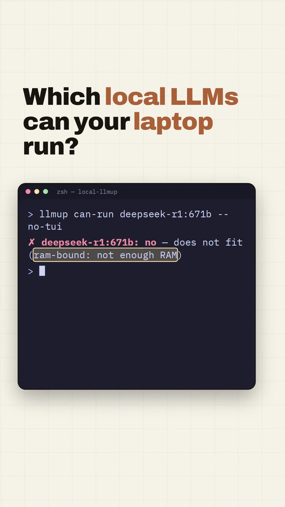

Launch videos that pass 51 checks before they ship.
demo-reel turns your repo, website, or screen recording into viral-ready reels for TikTok, Instagram Reels, YouTube Shorts, LinkedIn, and X. Each run makes 3 hook variants in 3 native formats and verifies every render. After you post, it picks the winning hook from real views.
Every step ends in a gate. When a render fails, the agent fixes the cause, re-renders, and re-checks. It never lowers the bar.
01 · Inspect
Reads the real product
Pulls the entry → action → result flow, exact colors and fonts, a lexicon of product words, and claims with verbatim source quotes.
02 · Hook lab
10+ hooks, scored
Hooks across at least 4 types are ranked by a published formula. The top 3 become A/B variants.
03 · Plan
A linted contract
reel-plan.json must pass 29 checks: reading time, pattern interrupts, safe zones, CTA, and share-copy limits.
04 · Build
Native per format
One deterministic composition, laid out separately for 9:16, 1:1, and 16:9, then finished to −14 LUFS with a poster baked into frame 0.
05 · Verify
Measured, not eyeballed
22 pixel and audio gates per render: first motion, black frames, frozen stretches, true peak, and caption readability.
06 · Learn
Real data picks the winner
Post all three variants. A Bayesian P(best) over hook rate, completion, or shares decides what ships next.
Viral-ready you can verify
Each gate is a threshold that FFmpeg or the linter measures, and every one is listed in metrics.md. A render ships only with zero blockers and a Viral Readiness Score of at least 85.
51machine-verified gates
227gate evaluations per run
9renders: 3 hooks × 3 formats
0unsourced numbers allowed on screen
Case studies
Both kits are committed with their plans and QA reports, so every number here can be re-checked.
Agent skill
demo-reel on itself



The first gate run scored 91.7 and caught 4 real defects, including 2 toolkit bugs (full-range color and 0 dBTP clipping). After fixes: VRS 100 on 9/9 renders, −14.4 LUFS, first motion at 0.07 s. QA report
Rust CLI
local-llmup



10 hooks across 10 types and 4 claims verified against source, including "66 models with evidence attached". VRS 100 on 9/9 renders, −14.0 LUFS, 7–8 cuts per reel. QA report
Launch video examples: 12 trending AI repos
Each reel shows one headline feature, built from the repo's own site, screenshots, and demo footage in its brand fonts and colors. All 36 renders (12 repos × 3 formats) passed the 51 gates at VRS 100. Click a preview to watch with sound. These are independent demos, not affiliated with or endorsed by the projects.
How do I make a launch video for my GitHub project?
Install the skill, open your repo in an agent that supports skills, and run /demo-reel. It reads the code, writes the hooks, renders the videos, and checks them.
Which platforms and formats does it produce?
Vertical 9:16 (1080×1920) for TikTok, Instagram Reels, and YouTube Shorts. Square 1:1 for LinkedIn and X feeds. Landscape 16:9 for X, YouTube, and your website. Each render comes with SRT captions and a poster image.
Which AI agents does it work with?
Any agent that loads Agent Skills: Claude Code, OpenAI Codex CLI, GitHub Copilot, Cursor, Gemini CLI, and opencode.
Does it need a paid API or cloud rendering?
No. The toolkit is stdlib-only Python plus FFmpeg, and rendering runs on your machine.
Can it put made-up numbers on screen?
No. Every number on screen must quote the project's own source verbatim, and the linter checks each quote before anything renders.